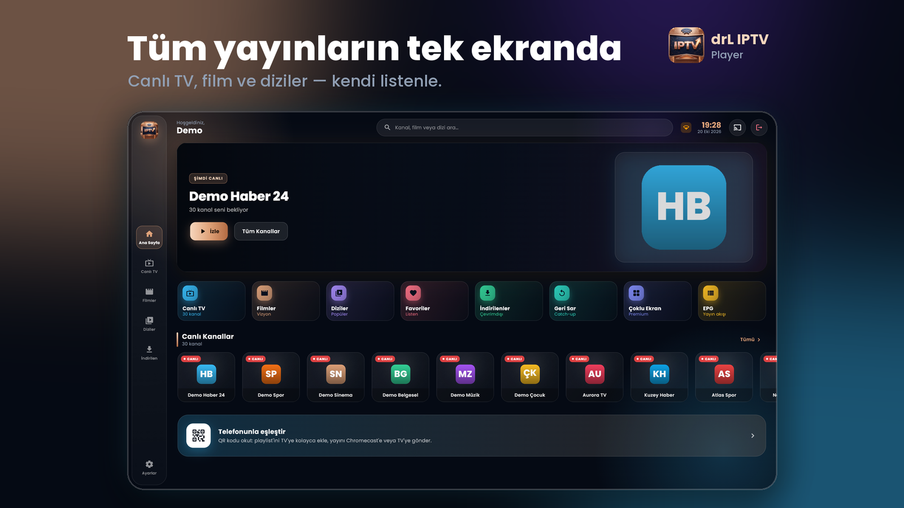
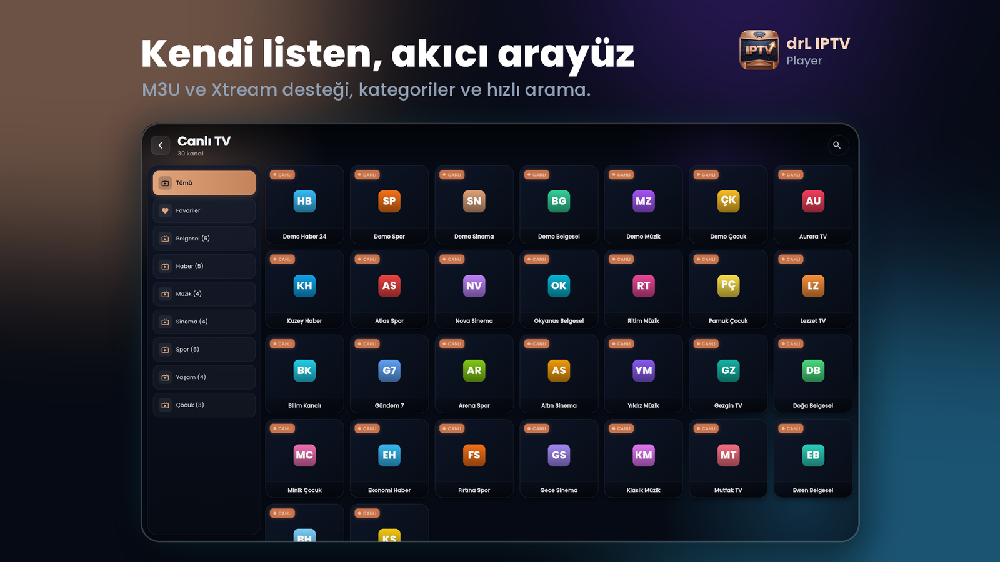
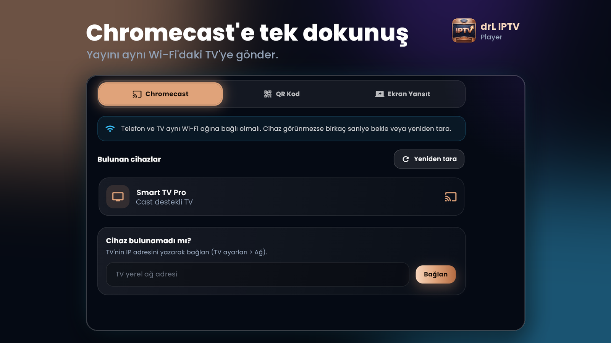
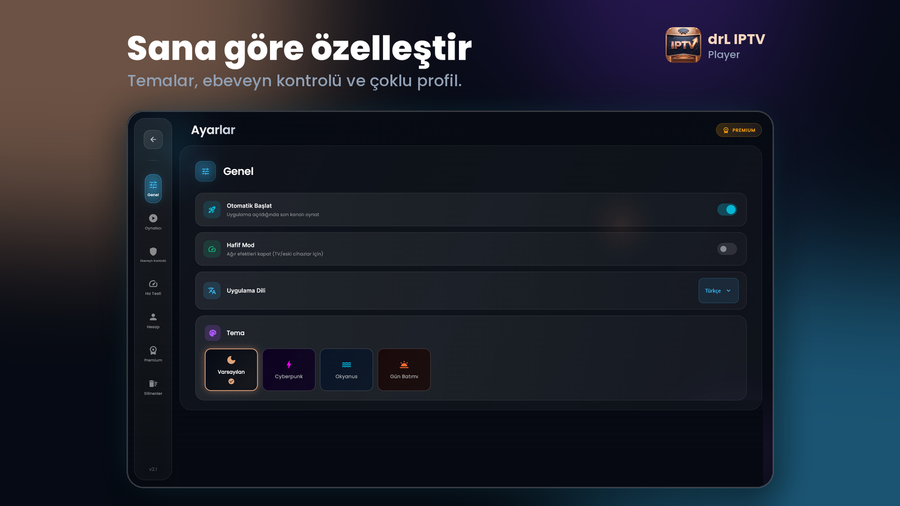

M3U ve Xtream Codes Desteği
Standart M3U/M3U8 bağlantıları veya Xtream Codes (sunucu adresi, kullanıcı adı, şifre) ile kendi yasal aboneliğinizi saniyeler içinde ekleyin.
drL IPTV Player, kullanıcının kendi M3U oynatma listesini veya Xtream Codes bilgilerini Android telefon, tablet ve Android TV'de oynatan modern bir medya oynatıcıdır; uygulama hiçbir kanal, film veya dizi içeriği sunmaz ve satmaz. QR kod ile telefondan TV'ye saniyeler içinde oynatma listesi aktarabilir, Chromecast ile yayını büyük ekrana gönderebilir ve tüm bilgilerinizi yalnızca kendi cihazınızda şifreli olarak saklayabilirsiniz.

Standart M3U/M3U8 bağlantıları veya Xtream Codes (sunucu adresi, kullanıcı adı, şifre) ile kendi yasal aboneliğinizi saniyeler içinde ekleyin.
Android TV ekranındaki QR kodu telefonunuzla okutarak uzaktan kumandayla uzun URL yazmadan playlist veya yayın gönderin.
Aynı Wi-Fi ağındaki Chromecast ve Google Cast destekli televizyonları otomatik bularak canlı yayınları ve videoları aktarın.
Kategorilere ayrılmış içerik görünümü, hızlı arama, favorilere ekleme ve kaldığınız yerden devam etme desteği.
Evdeki farklı kullanıcılar için ayrı profiller oluşturun ve yetişkin içerik filtresini PIN kodu ile koruyun.
Elektronik program rehberi (EPG), pencere içinde pencere (PiP) modu, seçilebilir ses/altyazı ve uyku zamanlayıcısı.
Android TV D-pad kumandası için özel odak yönetimi ve düşük donanımlı cihazlar için efektleri azaltan hafif mod.
Hesap açmanız gerekmez; oynatma listesi bilgileriniz sunucularımıza gönderilmez, yalnızca cihazınızda Android Keystore ile şifrelenir.




drL IPTV Player kullanımı için üyelik veya e-posta hesabı gerekmez. Eklediğiniz M3U bağlantıları ve Xtream Codes kimlik bilgileri yalnızca kendi cihazınızda şifreli olarak depolanır. Ücretsiz sürümde Google AdMob reklamları gösterilir (AB ve Birleşik Krallık'ta rıza sorulur); isteğe bağlı Premium abonelik reklamsız izleme, Geri Sar (destekleyen sağlayıcılarda) ve Çoklu Ekran özellikleri sunar.
Hayır. drL IPTV Player bir içerik sağlayıcı değildir; uygulama içinde hiçbir kanal, film veya dizi bulunmaz. Yalnızca kendi yasal M3U veya Xtream Codes kaynağınızı oynatır.
Android telefonlarda, Android tabletlerde ve Android TV / Google TV cihazlarında çalışır. Yalnızca Android işletim sistemli cihazlar desteklenmektedir.
Hayır. Üyelik veya e-posta kaydı gerekmeden doğrudan kendi oynatma listenizi ekleyerek kullanabilirsiniz.
Hayır. QR ile TV eşleştirme özelliği sayesinde TV ekranındaki QR kodu telefon kamerasıyla okutarak listenizi telefon tarayıcısından veya mobil uygulamadan TV'ye gönderebilirsiniz.
Premium abonelik işlemleri tamamen Google Play üzerinden yürütülür ve Google Play Abonelikler menüsünden istediğiniz zaman iptal edilebilir.